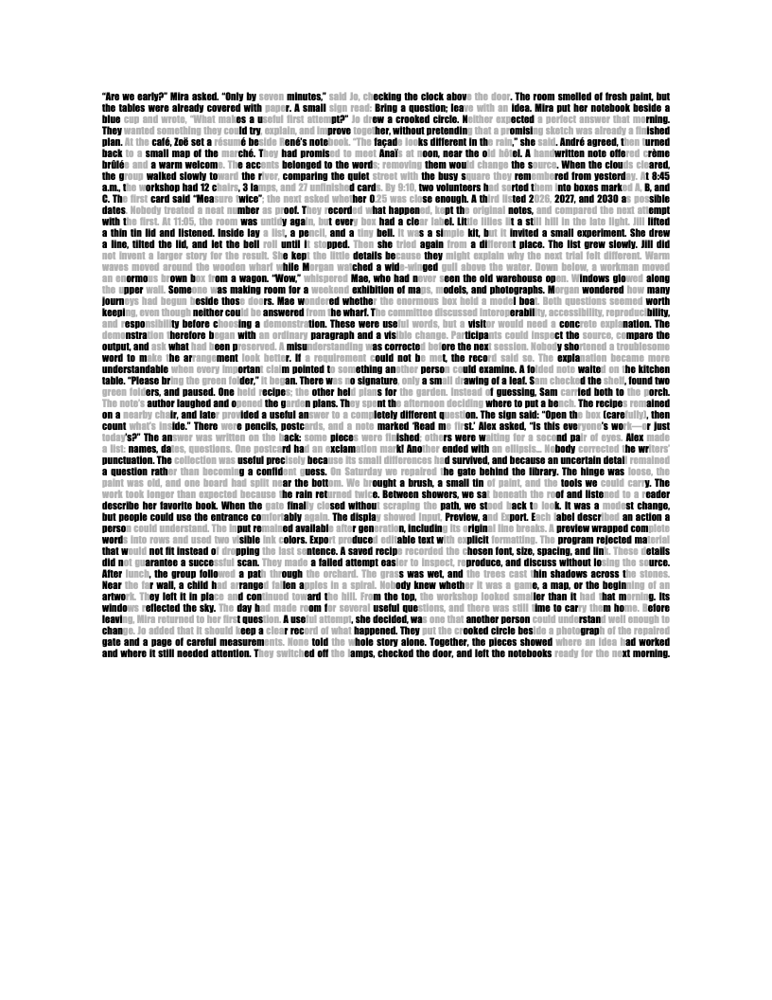

The clearest acceptance so far.
“yes, and extremely easily: this is the easiest pair to scan so far!”
The owner answered about the actual Word-to-Word paste, in both native Samsung Camera and Samsung “Scan QR code,” on a Galaxy S25 Ultra. The question named both the PDF and native page PNG. This is qualitative testimony on one device; the exact link displayed on the phone was not reported.
What was preserved
The recipient keeps all 5,506 non-whitespace characters in order, including case, accents, and punctuation. Every visible letter’s gray value matches the frozen layout. Its one-cell borderless table stays 450pt wide; the type stays 8pt with 9pt exact row spacing.
Native PDF inspection finds one Letter page, 50 visible prose rows, Impact only, and no image or drawing objects. The saved paste also reopened as one page.
Word’s own word-count display uses different token boundaries. The 1,114 count here is whitespace-separated source words. Paragraph and inter-word whitespace are normalized in the displayed arrangement; the original TXT keeps the exact source.
Before and after the actual paste.
Both pictures below are native Word PDF page captures at 96 DPI. They are shown smaller to fit this guide; open an original file for its unchanged pixels. No blur, thresholding, cropping, or resampling was applied to the scanner inputs.


Local OOXML output, with editable letter runs. The studio’s default DOCX is byte-for-byte identical to this input.
Copy-source DOCX · Word PDF
Complete words, letter colors, table width, size and row spacing survive. Apple Vision recovers the exact URL; both Samsung apps are owner accepted.
Pasted DOCX · Word PDF · Glyph audit
A repeatable local workflow.
1 · Generate with your words
Open the offline studio, supply the exact link and your mixed-case prose, then generate. It measures installed Impact, wraps whole words into fixed rows, and assigns visible letter colors. It never rewrites, truncates, or changes case.
2 · Transfer the Word document
Download the Word file and open it with Impact available. Use the same paper size in source and recipient. Select all, copy, then paste with source formatting. Keep the table’s width, type and exact line spacing.
3 · Check the actual recipient
Save the pasted document, check that every row remains on one line, and scan that document or its export. Verify the exact destination shown. A different word sequence or app can change scanning even when it fits.
Narrow Letter · strongest native evidence
6.25in width, 8pt Impact, 9pt row spacing, black and gray 180. This is the studio default for the supplied long passage and the owner’s easiest pair so far.
Source DOCX · Pasted DOCX · Exact original TXTWider Letter · a little larger type
6.5in width, 8.5pt Impact, 9.35pt Word row spacing. The earlier HTML-to-Word version is owner accepted. A generated Word-file source and real Word-to-Word paste also read in Vision; this latter pair has no phone report yet.
Wider pasted DOCX · PDF · Original PNG · Earlier phone receipt
The studio chooses the largest geometrically valid size among 9, 8.5 and 8pt. It does not predict scanning. A short source needs explicit complete-source repetition to fill the square; a source that cannot fit is rejected. Original TXT and recipe exports preserve raw whitespace, including CRLF. Wrapped TXT is a separate reading/source export.
The browser Copy button’s HTML/plain payloads passed a mocked clipboard test. The end-to-end native browser clipboard route into Word was not tested. The downloaded Word-file route has the actual native copy/paste evidence.
What makes this work—and what still costs something.
| Question | Observed result | Practical limit |
|---|---|---|
| Any words, without rewriting? | The generator accepts supported mixed-case prose and preserves whole words, case, accents, punctuation, and order. The long example uses one source copy. | Fit does not guarantee a scan. Other source passages failed software reading. Short sources may need explicit repetition; long or unsupported material is rejected. |
| A normal document line? | The 6.25in table fits the 6.5in text area of Letter with one-inch margins. Fifty explicit rows survive Word-to-Word paste without wrapping into extra visible rows. | This is condensed 8pt type and dense reading. It is a compact text structure, not ordinary comfortable 11–12pt body text. |
| Caps lock or extra bold required? | No all-caps conversion. Both Impact letter colors use weight 400; the native example contains ordinary mixed case, dialogue, numbers and precomposed accents. | Impact itself is a heavy-looking condensed face. Weight400 here does not mean it looks like regular Aptos body type. |
| Plain black text? | Earlier accepted Avenir examples use black heavy/light faces. In this run, all four new black Avenir browser prose cases read in Vision. | Different font weights still create visible dark/light areas. This is styled text; uniform unformatted plaintext scanning was not established. New Avenir cases have no native Word-paste evidence. |
| Less dramatic contrast? | Avenir heavy black with regular gray 96 read three of four new browser prose cases in Vision. Impact’s gray 180 baseline supports the accepted native Word route. | No universal minimum separation was found. Gray160 variants and paler gray 200 variants did not rescue the selected failing Impact passages. Word results cannot be inferred from browser font results. |
| A4 too? | An A4 source copied into an A4 recipient keeps one page, 50 rows, and the 6.25in table, with exact words and letter colors. | No primary reader recovered the A4 outputs. Copying a whole Letter source into A4 also transferred Letter paper settings. Selecting the table via the tested menu route kept A4 but lost the table container. |
| Smaller HTML clipboard data? | Coalescing adjacent equally styled letters reduced one clipboard HTML example from 555,538 to 92,033 bytes (83.43%), while Word preserved its words and visible styles. | Fewer HTML bytes do not determine physical width or scanning. The fixed-width Word table is the stronger layout control. |
| Google Docs and print? | The task’s Word-or-Docs requirement was pursued through native Word on this Mac. | Actual Google Docs paste, other Word platforms, physical print and other phones remain untested. Owner profiles and authentication were left untouched. |
The visible text is the entire mark. There are no hidden solid QR modules, image replacements, remote fonts, runtime AI calls or generation server. The link is carried by the arrangement of dark and light letter ink; the prose remains copyable text.
The successes and the failures.
All 51 candidate images had an exact immediate repeat before reading. Each unchanged native image was sent once to each of four ordinary primary readers. These counts include browser prose, Word exports and studio previews; they describe this frozen run, not a probability of scanning.
Both conventional QR controls recovered the exact intended URL in all four readers. No wrong payload was returned. The small prose candidates did not meet the stricter promotion rule requiring two independent primary readers, including one outside ZXing.
What the negative results teach
Changing words changes the distribution of strokes, spaces and gaps. Several short sources fit perfectly but did not read in Vision. A geometric “ink fill” heuristic chose larger type for nine new cases; all nine failed all four readers, so that heuristic was not used as the studio default.
A larger quiet margin changed the long studio preview from no recovery at four modules to exact Vision recovery at five modules. The generated Word bytes did not change. A4 layout fidelity also did not imply scan success.
Phone acceptance is a separate lane. The owner accepted Word01, Word06 and Word09 in both Samsung apps on both asked-about surfaces. These are 12 positive app/surface cells on one physical device, with unreported exact phone payloads and no measured detection rate.
| Saved case / lane | Type and source | Vision | ZXing / jsQR / OpenCV | Evidence |
|---|
Complete denominator, including stops and unused slots
83 candidate slots were prospectively assigned within a 96-slot cap: 51 captured, 3 rejected before capture, 28 unattempted, and 1 stopped by the native A4 paper guard. The 28 include 25 corpus slots stopped by font-probe harness guards, two studio slots stopped before PNG capture, and unused Word03. Thirteen cap slots were never assigned.
Two controls and 51 candidates produced 53 byte-distinct native images and 53 exact repeat pairs. The four-reader total is 212 calls. Product regression has a reserved maximum of 39 further decoder calls. Native paste completed 11 of 12 planned trials; one saved paste was reopened. Resource captures are capped at 12, including the final guide capture.
| Batch | Planned | Captured | Rejected | Unattempted | Paper guard |
|---|---|---|---|---|---|
| corpus-01 | 14 | 0 | 0 | 14 | 0 |
| corpus-02 | 14 | 12 | 2 | 0 | 0 |
| corpus-03 | 2 | 1 | 1 | 0 | 0 |
| corpus-04 | 3 | 3 | 0 | 0 | 0 |
| corpus-05 | 9 | 9 | 0 | 0 | 0 |
| corpus-06 | 11 | 0 | 0 | 11 | 0 |
| corpus-07 | 11 | 11 | 0 | 0 | 0 |
| word-01 | 1 | 1 | 0 | 0 | 0 |
| word-02 | 1 | 1 | 0 | 0 | 0 |
| word-03 | 1 | 0 | 0 | 1 | 0 |
| word-04 | 1 | 1 | 0 | 0 | 0 |
| word-05 | 1 | 1 | 0 | 0 | 0 |
| word-06 | 1 | 1 | 0 | 0 | 0 |
| word-07 | 1 | 1 | 0 | 0 | 0 |
| word-08 | 1 | 1 | 0 | 0 | 0 |
| word-09 | 1 | 1 | 0 | 0 | 0 |
| word-10 | 1 | 0 | 0 | 0 | 1 |
| word-11 | 1 | 1 | 0 | 0 | 0 |
| word-12 | 1 | 1 | 0 | 0 | 0 |
| word-13 | 1 | 1 | 0 | 0 | 0 |
| word-14 | 1 | 1 | 0 | 0 | 0 |
| word-15 | 1 | 1 | 0 | 0 | 0 |
| studio-check-01 | 1 | 0 | 0 | 1 | 0 |
| studio-check-02 | 1 | 0 | 0 | 1 | 0 |
| studio-check-03 | 1 | 1 | 0 | 0 | 0 |
| studio-check-04 | 1 | 1 | 0 | 0 | 0 |
| studio-check-05 | 0 | 0 | 0 | 0 | 0 |
| studio-check-06 | 0 | 0 | 0 | 0 | 0 |
Stopped harnesses and failed UI tests are retained. The corrections changed font-probe targeting, input paths, viewport containment or asynchronous waits. They did not selectively rerun an unchanged failed scanner input. Full machine-readable ledger.
What was tested in the tool and documents.
The offline studio passed 10 control checks: source and wrapped-text exports, exact native-tested DOCX output for both Letter widths, explicit repetition, stale export disabling, empty and unsupported input rejection, exact oversized-payload rejection, raw whitespace recipe roundtrip, A4 fit rejection, and no observed external network requests or script errors. The clipboard check is explicitly mocked.
Four final editable examples were rendered by the canonical document tool with a task-only font configuration, then every page was inspected at native 96 DPI. All four show one page, 50 visible Impact rows and no overlap, clipping, missing accented glyphs, image objects or drawing objects. The initial renderer’s font-substitution failure is preserved; no fonts were installed or embedded.
Repository checks in a disposable copy
-
npm test: passed · stdout · stderr -
npm run build: passed · stdout · stderr -
npm run test:browser: passed · stdout · stderr -
npm run test:text-browser: passed · stdout · stderr -
npm run format:check: failed; retained raw output · stdout · stderr -
node_modules/.bin/prettier --check experiments/prose-qr/paste-prose-2026-10-11/docx.mjs: passed · stdout · stderr
The product and downloads in the original checkout are preserved. Raw captured HTML, recipes and receipts retain their exact bytes; full-repository formatting exceptions are recorded instead of rewriting evidence. Installed-extension and native product-text checks are optional and were not run in this scope.
Preserved evidence, preserved project state.
The run stayed on codex/aqrobat-foundation with existing
draft PR #1. The pre-run anchor is
4472c93886255e8ce259ca64c4492136124949c5. The 14,618
protected files totaling 657,278,083 bytes are verified against the
initial manifest at closure. Earlier accepted examples and evidence
remain unchanged.
Only this run’s new research and experiment directories are in the
backup scope. Owner AQROBAT-CONTEXT/ stays untracked. npm
remains private and unpublished. There were no agents, new chats,
messages to other people, automations, deployments or Site calls. The
existing private Site audience was not changed; this is a local guide,
with evidence backed up to the existing public Git repository.
The maximum allowance was three hours, from 19:10:45Z to 22:10:45Z on October 11. New QR experiments stopped earlier; the closing period is for the guide, controls, custody and backup. No further experiments are scheduled.
Keep the earlier results distinct
The original styled-story and earlier portable examples keep their own evidence and phone reports. This run adds actual Word receiver evidence and a complete single-copy source. It does not rewrite historical decoder outcomes, combine transformed images with native results, or promote matrix decoding into camera-scanning evidence.
Styled-story guide · Earlier size/font guide · Project handoff
Where a later scope could go.
The immediate useful result is the narrow Letter Word route and the local studio. Further work could test Google Docs paste with a fresh authorized session, physical printing at declared size, or a broader device-and-prose corpus to make scan behavior more predictable. None of those directions has been started.